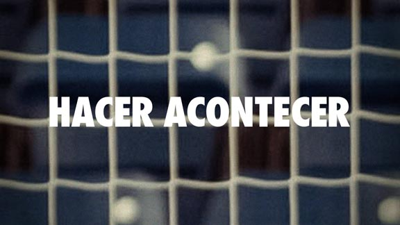

Somos un pequeño equipo de personas vinculadas al mundo audiovisual con un interés personal por la historia del fútbol sala. Nos encontramos en la fase de pre-producción, buscando diferentes formas de financiación, y reuniendo el material y el equipo técnico necesarios para la realización del documental.
Lucía Boned Guillot, guión y producción
Paula Giménez Monar, dirección y guión
Vicente Gil Ginestar, realización y diseño